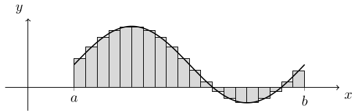
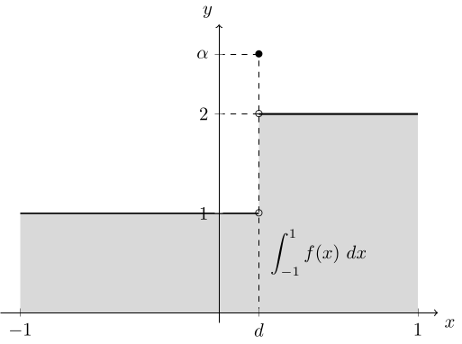
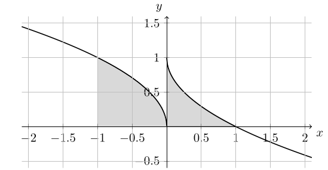
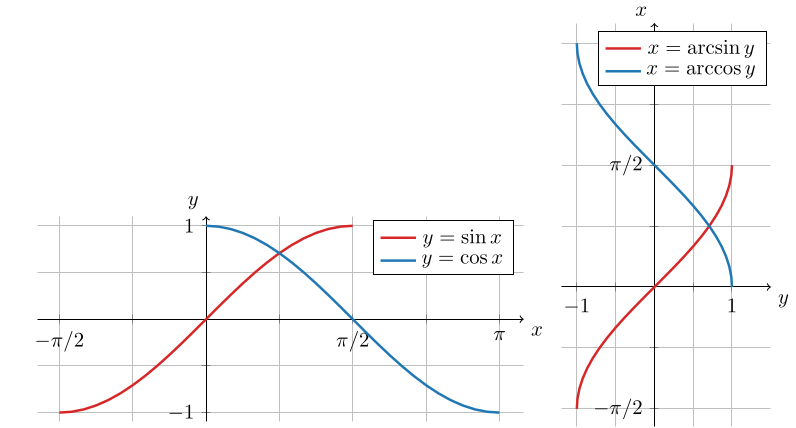
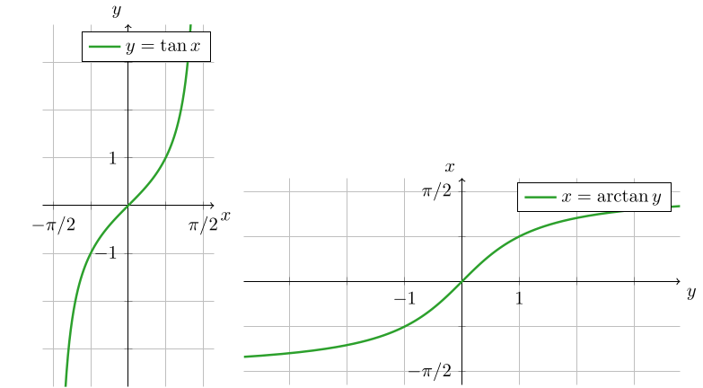

3. 多変数関数の積分
ここから他変数関数の積分について紹介していこう. まずは $2$ 次元平面上の関数 $f(x, y)$ に対する積分を考え, その議論を $3$ 次元空間上の関数 $f(x, y, z)$ に対する積分に拡張することを目指す. 他変数関数に対しても, $1$ 変数の場合と同様にリーマン積分を考えることが可能であり, 結果的に $1$ 変数関数の積分と同様の性質を得ることができる. 特に, 他変数関数の積分は, 他変数関数の微分 (勾配) と密接に関連する.
以下の説明は, 一見すると複雑に感じるかもしれないが, $1$ 変数の場合と同様である, ということを念頭に理解して欲しい.
3.1: 曲線の長さと線積分
他変数関数について考える前に, まずは $xy$ 平面上の積分の一例として, 曲線の長さの計算を考えよう. ここでは, 曲線の長さもリーマン積分と同様にして導出するアイデアを紹介する.
$xy$ 平面上の曲線が, 媒介変数表示 \[ x=f(t), \quad y=g(t) \quad (a\le t\le b) \] により表されているとする. このとき, 区間 $[a, b]$ の分割 \[ a = t_0 \lt t_1 \lt \dots \lt t_{N-1} \lt t_N = b \] に対し, 曲線上の点 \[ P_k = (f(t_k), g(t_k)) \] を考える. このとき, 点 $P_k$ と $P_{k+1}$ の距離 $\Delta L_k$ は \[ \Delta L_k = \overline{P_kP_{k+1}} = \sqrt{(f(t_{k+1}) - f(t_k))^2 + (g(t_{k+1}) - g(t_k))^2} \] により与えられる (曲線の微小長さ $dL$ は \[ dL = \sqrt{(dx)^2 + (dy)^2} \] により与えられる, という説明に相当している). これを用いて, 点 $P_0, P_1, \dots, P_n$ を結んで得られる折れ線の長さは \[ \sum_{k=1}^{N-1}\Delta L_k \] と表される. さて,
区間 $[a, b]$ 上の関数 $f(x)$ を考える.
- $a = x_0 \lt x_1 \lt \dots\lt x_{n-1}\lt x_N = b$ を満たす点列 $x_0, \dots, x_N$ を区間 $[a, b]$ の 分割 (区間分割) もしくは メッシュ という.
- 区間 $[a, b]$ の分割 $x_0, \dots, x_n$ に対し, 各 $[x_k, x_{k+1}]$ を 小区間 といい, この小区間の長さを $\Delta x_k = x_{k+1} - x_k$ と表記する.
- 区間 $[a, b]$ の分割 $x_0, \dots, x_n$ に対し, \[ \Delta x = \max_{k=0,\dots, N-1}\Delta x_k \] を 分割のサイズ もしくは メッシュサイズ という.
- 区間 $[a, b]$ の分割 $x_0, \dots, x_n$ と, 各 $x_k$ について \[ x_k \le t_k \le x_{k+1} \] を満たす点 $t_0, \dots, t_{N-1}$ に対し, \[ \sum_{k=0}^{N-1}f(t_k)\Delta x_k \] を関数 $f$ の (区間 $[a, b]$ の分割 $x_0, \dots, x_n$ と 点 $t_0, \dots, t_{N-1}$ に関する) リーマン和 (Riemann sum) という.
- 区間 $[a, b]$ 上の関数 $f$ に対し, リーマン和の極限 \[ \lim_{\Delta x\to 0}\sum_{k=0}^{N-1}f(t_k)\Delta x_k \] が存在するならば, 関数 $f$ は区間 $[a, b]$ 上で リーマン積分可能 であるという. また, その極限を リーマン積分 (Riemann integral) もしくは 定積分 (definite integral) と呼び, \[ \int_a^b f(x)~dx = \lim_{\Delta x\to 0}\sum_{k=0}^{N-1}f(t_k)\Delta x_k \] と表記する. また, このとき関数 $f$ を 被積分関数 (integrand) と呼ぶ.
リーマン和のイメージ図を下に掲載する. 与えられた関数 $f(x)$ に対し, 各長方形の高さが $f(t_k)$, 横幅が $\Delta x_k$ であり, 従って長方形の符号付き面積 ($x$ 軸より下側に飛び出した部分の面積は負であるとみなす) の和がリーマン和を表している. 結果的に, 分割のサイズを $\Delta x\to 0$ とした際のリーマン和の極限は, 関数 $f(x)$ で表される図形の符号付き面積であると説明される. 従って, リーマン積分は (高校数学で説明されるように, 確かに) 面積と対応づけることができるものである.

有限個の点で不連続であるような有界な関数がリーマン積分可能であることを, 具体例を通じて確認してみよう. 実数 $\alpha$ に対し, 区間 $[-1, 1]$ 上での関数 $f(x)$ として \[ f(x) = \left\{\begin{array}{rl} 1 & (-1\le x \lt d), \cr \alpha & (x = d), \cr 2 & (d\lt x\le 1) \end{array}\right. \] を考える, ただし $d\in [-1, 1]$ とする. この関数のリーマン和を考えると, $x=d$ を含む小区間 $[x_m, x_{m+1}]$ 上の点 $t_m$ の選び方により, リーマン和の値は異なるものになる: \[ \begin{array}{rl} \displaystyle\sum_{k=0}^{N-1}f(t_k)\Delta x_k &= \displaystyle 1\cdot\sum_{k=0}^{m-1}\Delta x_k + f(t_m)\cdot \Delta x_m + 2\cdot \sum_{k=m+1}^{N-1}\Delta x_k \cr &= \left\{\begin{array}{rl} (x_m - (-1)) + 1\cdot \Delta x_m + 2(1 - x_{m+1}) & (t_m\lt d), \cr (x_m - (-1)) + \alpha\cdot \Delta x_m + 2(1 - x_{m+1}) & (t_m= d), \cr (x_m - (-1)) + 2\cdot \Delta x_m + 2(1 - x_{m+1}) & (t_m\gt d), \cr \end{array}\right. \end{array} \] ただし, $\Delta x\to 0$ とした極限を考えると, 結局 $\Delta x_m\to 0$, $x_m\to d$, $x_{m+1}\to d$ となるため, 収束先は $t_m$ の選び方に依らず $3-d$ であり, 従って \[ \int_{-1}^1 f(x)~dx = 3-d \] である ($f$ はリーマン積分可能であり, その積分値は $\alpha$ に依らない).

同様のことは, 不連続点が複数ある関数に対しても可能である.
$f$ が定数関数 $f\equiv c$ ならば, リーマン積分の定義より \[ \int_a^b f(x)~dx = \int_a^b c~dx = \lim_{\Delta x\to 0} c\underbrace{\sum_{k=0}^{N-1}\Delta x_k}_{=b-a} = c(b-a) \] である.
上では $a \lt b$ としてリーマン積分の定義を述べたが, そうでない場合には
- ($1$ 点での積分) \[ \int_a^a f(x)~dx = 0 \]
- (積分区間の反転) \[ \int_a^b f(x)~dx = -\int_b^a f(x)~dx \]
により積分値が定義される.
リーマン和のイメージ図において, 各 $\Delta x_k$ は "微小区間" と説明されることがある. リーマン積分における $dx$ という記号も, この微小区間というアイデアを反映したものであると解釈することができるが, もしも "微小時間" に関する積分を考える場合には, 代わりに $\Delta t_k$, $dt$ という記号が用いられることが多い.
微小時間というアイデアを利用すると, 『速度を積分すると位置の変化量が得られる』という説明も以下のように解釈が可能である: ある時刻 $s_k \in [t_k, t_{k+1}]$ における速度 $f(s_k)$ に, 微小時間 $\Delta t_k$ を掛けることで, 微小な時間経過における移動距離 (および方向) が得られる. その総和 (リーマン和) が総移動距離の近似であると思うことができ, さらに時間区間幅 $\Delta t$ を $0$ に近づける極限を考えることで, 総移動距離の厳密な表現が得られるのである.
実際には, リーマン積分のアイデアは, 図形の面積の計算や速度から移動距離を求める以外にも, 様々な場面で利用されることになる.
長さ $L$ [m] の棒があるとする.
- この棒の密度が (位置に依らない定数) $\rho$ [kg/m] であるとき, 棒の質量 $M$ [kg] を求めよ.
- この棒の密度が位置 $x\in [0, L]$ を変数とする関数 $\rho(x)$ [kg/m] として表されているとき, 棒の質量 $M$ [kg] を積分で表せ.
上は $M= \rho L$ である. 一方で, 下はリーマン積分を用いて \[ M = \lim_{\Delta x\to 0}\sum_{k=0}^{N-1}\rho(t_k)\Delta x_k = \int_0^L \rho(x)~dx \] と表される. つまり, 棒の総質量は, 微小長さ $\Delta x_k$ における質量 $\rho(t_k)\Delta x_k$ たちの和 (リーマン和) で近似され, その $\Delta x\to0$ の極限により厳密な表現が得られる.
リーマン積分の性質についていくつかまとめておこう. 以下の性質は, リーマン積分を和の極限に帰着させることができることから自然と導出される.
関数 $f$, $g$ は区間 $[a, b]$ 上でリーマン積分可能とする. このとき以下が成立する:
- (線形性) 全ての $c_1$, $c_2$ に対して \[ \int_a^b (c_1f(x) + c_2g(x))~dx = c_1\int_a^b f(x)~dx + c_2\int_a^b g(x)~dx. \]
- (積分区間の分割) 全ての $c\in[a, b]$ に対して \[ \int_a^b f(x)~dx = \int_a^c f(x)~dx + \int_c^b f(x)~dx. \]
- (単調性) 全ての $x\in [a,b]$ に対し $f(x)\le g(x)$ ならば \[ \displaystyle\int_a^bf(x)~dx \le \int_a^b g(x)~dx. \]
例として一番上だけ証明しておこう. リーマン積分の定義と極限の性質より, \[ \begin{array}{rl} \displaystyle\int_a^b (c_1f(x)+c_2g(x))~dx &= \displaystyle\lim_{\Delta x\to 0}\sum_{k=0}^{N-1}(c_1f(t_k) + c_2g(t_k))\Delta x_k \cr &= \displaystyle c_1 \lim_{\Delta x\to 0}\sum_{k=0}^{N-1}f(t_k) \Delta x_k + c_2 \lim_{\Delta x\to 0}\sum_{k=0}^{N-1}g(t_k) \Delta x_k \cr &= \displaystyle c_1\int_a^b f(x)~dx + c_2\int_a^b g(x)~dx. \end{array} \]
上の性質は, 和の性質の中で極限により壊れないものが積分に引き継がれていると解釈できる. 実際, $f_1, \dots, f_n$, $g_1, \dots, g_n \in\mathbb{R}$ に対して, \[ \begin{array}{c} \displaystyle \sum_{i=1}^n (c_1f_i + c_2g_i) = c_1\sum_{i=1}^n f_i + c_2\sum_{i=1} g_i, \cr \displaystyle \sum_{i=1}^n f_i = \sum_{i=1}^m f_i + \sum_{i=m+1}^n f_i, \cr \text{全ての $i$ に対し }f_i\le g_i\implies \displaystyle \sum_{i=1}^n f_i \le \sum_{i=1}^n g_i \end{array} \] の成立は明らかだが, これらと同様のことが積分についても成立する, ということを意味している.
積分区間の分割は, 例えば \[ \int_a^b f(x)~dx - \int_a^c f(x)~dx = \int_c^b f(x)~dx \] といった形でも利用される.
また, 上で例として述べた, 有限個の不連続点を持つ有界な関数のリーマン積分について, 改めてまとめておく:
区間 $[a, b]$ 上の有界な関数 $f(x)$ が, 端点 $x=a, b$ でのみ不連続であるとする. また, 端点における片側極限 \[ \lim_{x\searrow a}f(x),\qquad \lim_{x\nearrow b}f(x) \] が存在するとする. このとき, 関数 \[ \widetilde{f}(x) = \left\{\begin{array}{rl} \displaystyle\lim_{x\searrow a}f(x) & (x=a), \cr f(x) & (a\lt x\lt b), \cr \displaystyle\lim_{x\nearrow b}f(x) & (x=b) \end{array}\right. \] は連続であり (従ってリーマン積分可能であり), さらに $f(x)$ も区間 $[a, b]$ 上でリーマン積分可能であり, \[ \int_a^b f(x)~dx = \int_a^b \widetilde{f}(x)~dx \] が成立する.
- 積分区間の分割と組み合わせると, 関数 $f(x)$ が区間 $[a, b]$ 内部の点 $c$ において不連続であり, 左右からの片側極限 (不連続なので一致しない) がそれぞれ存在するとき, \[ \int_a^b f(x)~dx = \int_a^c f(x)~dx + \int_c^b f(x)~dx \] などと分割することで, 分割された各区間上では連続な関数の積分であると見なすことができる, ただし上の表記において区間 $[a, c]$ 上の関数 $f(x)$ および区間 $[c, b]$ 上の関数 $f(x)$ の $x=c$ における値は片側極限の値に取り替えられている.
- なお, 全ての不連続点において左右からの片側極限がそれぞれ存在する関数を 区分的連続 であるという.
- 不連続点における片側極限が存在しない場合には, この性質は利用できない. 例えば, $\sin (1/x)$ は $x=0$ で振動するため片側極限を持たず, 実は $0$ を含む区間上で (通常の) リーマン積分はできない. ただし, 実は後に述べる 広義積分 は可能であり, 広義積分の意味での積分値を定めることができる.
- 以下に述べるいくつかの性質は, 被積分関数が連続であることを仮定する必要があるが, 実際には区分的連続であれば, 適切に分割された各区間上に適用することができる.
上で例として挙げた関数 \[ f(x) = \left\{\begin{array}{rl} 1 & (-1\le x \lt d), \cr \alpha & (x = d), \cr 2 & (d\lt x\le 1) \end{array}\right. \] のリーマン積分について, もう一度考えてみよう. 積分区間の分割により, ($x=d$ における値を適当に取り替えることで) \[ \int_{-1}^1 f(x)~dx = \int_{-1}^d 1~dx + \int_d^1 2~dx = 3-d \] と計算することが可能である.
次の性質は後の証明で利用することになる:
関数 $f$ は区間 $[a, b]$ 上でリーマン積分可能とする. このとき, \[ \left|\int_a^b f(x)~dx\right| \le \int_a^b |f(x)|~dx \] が成立する.
本来は $f$ がリーマン積分可能であるとき $|f|$ もリーマン積分可能であると証明する必要があるが, ここでは省略し, 不等式のみを示そう. 証明には (通常の) 三角不等式 \[ |a+b|\le |a|+|b| \quad \text{for all}\quad a,b\in\mathbb{R} \] を利用する (この成立は明らかだろう, 等号成立は $a$ と $b$ の符号が等しい場合のみ). 三角不等式より \[ \begin{array}{rl} \left|\displaystyle\sum_{i=1}^n a_i\right| \le \displaystyle\sum_{i=1}^n|a_i| \end{array} \] が成立することと, リーマン積分の定義より \[ \begin{array}{rl} \displaystyle\left|\int_a^b f(x)~dx\right| &= \displaystyle\left|\lim_{\Delta x\to 0}\sum_{k=0}^{N-1}f(t_k)\Delta x_k\right| \cr &\le \displaystyle\lim_{\Delta x\to0}\sum_{k=0}^{N-1}|f(t_k) \Delta x_k| \cr &= \displaystyle\lim_{\Delta x\to0}\sum_{k=0}^{N-1}|f(t_k)| \Delta x_k = \int_a^b |f(x)|~dx. \end{array} \]
関数 $f$ が $[a,b]$ 上で連続であるとする. このとき, \[ \int_a^b f(x)~dx = f(c)(b-a) \] を満たす $c\in [a, b]$ が存在する. この $f(c)$ を, 関数 $f(x)$ の区間 $[a, b]$ 上の平均と呼ぶ.
$f$ が定数関数である場合は明らか, そうでない場合は, $f(x)$ の区間 $[a, b]$ 上での最小値 $m$ と最大値 $M$ に対し, $m\le f(x)\le M$ が成立している. ここで単調性より \[ \underbrace{\int_a^b m~dx}_{=m(b-a)} \le \int_a^b f(x)~dx \le \underbrace{\int_a^b M~dx}_{M(b-a)} \] であり, 特に \[ k = \dfrac{1}{b-a}\int_a^b f(x)~dx \] とおくと, $m\le k\le M$ を満たしている. 従って, 中間値の定理より \[ f(c) = k = \dfrac{1}{b-a}\int_a^b f(x)~dx \] となる $c\in [a, b]$ が少なくとも $1$ つ存在することがわかる.
1.2: 微積分学の基本定理
リーマン積分は関数で表される領域の面積と関連付けることができるが, 同様に 不定積分 とも関連付けることができる. これを利用することで, リーマン積分の積分値を (極限などを考えることなく) 容易に計算することが可能である. 高校数学では事実として紹介されたものと思われるが, ここでは『なぜそうなるのか』を解説したい.
まず, 原始関数とは何だったかを復習しておく:
区間 $I\subset\mathbb{R}$ 上の関数 $f(x)$ に対し, もしも $I$ 上の $C^1$ 級関数 $F(x)$ であって, \[ F'(x) = f(x) \] を満たすものが存在するならば, $F(x)$ を関数 $f(x)$ の (区間 $I$ における) 原始関数 (primitive function) という.
もしも $F(x)$ が関数 $f(x)$ の原始関数ならば, 全ての原始関数はある定数 (積分定数) $C$ を用いて \[ F(x) + C \] と表すことができる. このことを \[ \int f(x)~dx = F(x) + C \quad(\text{もしくは単に $F(x)$}) \] と表記し, またこの式 (もしくは原始関数を求める操作および原始関数自身) を 不定積分 (indefinite integral) という.
原始関数および不定積分は微分の逆操作に相当するものであり, 英語では antiderivative と言及されることもある. 以降は, 多項式や初等的な関数の微分が具体的にどのような形になるか, ということは既知のものであるとする. つまり, 簡単な関数 $f(x)$ に対する原始関数 $F(x)$ は簡単に求めることができるので, これを定積分の計算に利用したい. このときに重要になるのが以下の定理である:
- 関数 $f(x)$ が区間 $[a, b]$ 上で連続なら, 区間 $[a, b]$ 上の関数 \[ \int_a^x f(s)~ds \] は $f(x)$ の (区間 $[a, b]$ における) 原始関数の一つである.
- $F(x)$ を関数 $f(x)$ の区間 $[a, b]$ における原始関数とする. このとき, \[ \left[F(x)\right]_a^b = F(b) - F(a) = \int_a^b f(x)~dx \] が成立する.
- まず, $f(x)$ が区間 $[a, b]$ 上で連続であるとき, \[ F(x) = \int_a^x f(s)~ds \] により定められる関数 $F(x)$ が連続であることを証明しよう. 関数 $f(x)$ が区間 $[a, b]$ 上で連続であることから, 特に有界であり, \[ |f(x)| \le M \] を満たす $M\ge 0$ が存在する. これを用いると, 全ての $x_0\le x$ に対し \[ \begin{array}{rl} |F(x)-F(x_0)| &= \displaystyle\left|\int_a^x f(x)~dx - \int_a^{x_0} f(x)~dx\right| \cr &= \displaystyle\left|\int_{x_0}^x f(x)~dx\right| \quad(\because\text{積分区間の分割}) \cr &\le \displaystyle\int_{x_0}^x |f(x)| dx \quad(\because\text{積分の三角不等式}) \cr &\le M(x-x_0) \quad(\because\text{単調性}) \end{array} \] が成立する. 同様に, 全ての $x_0\ge x$ に対し $|F(x_0)-F(x)| \le M(x_0-x)$ が成立する. 上 $2$ つの不等式と三角不等式から, 全ての $x_0\in [a, b]$ に対し \[ -M|x-x_0| + F(x_0) \le F(x) \le M|x-x_0| + F(x_0) \] が得られ, 挟み撃ちの原理より \[ \lim_{x\to x_0}F(x) = F(x_0), \] すなわち $F$ が $x_0$ で連続であることがわかる. これは $x_0\in [a,b]$ の選び方によらず成立するため, $F$ の連続性が得られたことになる.
- 次に, 上の関数 $F(x)$ の微分を考える. まず, $h\gt 0$ のときは $[x, x+h]\subset [a, b]$ ならば積分の平均値定理より \[ F(x+h) - F(x) = \int_x^{x+h} f(x)~dx = f(c)h \] を満たす $c\in [x, x+h]$ が存在する. 同様に, $h\lt 0$ のときは $[x+h, x]\subset [a, b]$ ならば \[ F(x+h) - F(x) = -\int_{x+h}^x f(x)~dx = -f(c)(-h) = f(c)h \] を満たす $c\in [x+h, x]$ が存在する. あとは $f(x)$ の連続性より, \[ F'(x) = \lim_{h\to 0}\dfrac{F(x+h)-F(x)}{h} = \lim_{h\to 0}f(c) = f(x) \] が得られるため, 上で定めた $F(x)$ は確かに $f(x)$ の区間 $[a, b]$ における原始関数の一つである.
- 以上の議論から, 関数 $f(x)$ の区間 $[a, b]$ における全ての原始関数 $F(x)$ は, 対応する定数 $C$ を用いて \[ F(x) = \int_a^x f(s)~ds + C \] と表すことが可能であるため, \[ F(b)-F(a) = \int_a^b f(x)~dx \] が得られる.
- $a, b\gt 0$ もしくは $a, b\lt 0$ のとき, \[ \displaystyle\int_a^b \dfrac{1}{x}~dx = \left[\log |x|\right]_a^b = \log \dfrac{b}{a} \]
- $\displaystyle\int_{-1}^1 |x|~dx = \left[\dfrac{x|x|}{2}\right]_{-1}^1 = 1$, もしくは積分区間の分割を利用して \[ \begin{array}{rl} \displaystyle\int_{-1}^1 |x|~dx &= \displaystyle\int_{-1}^0 (-x)~dx + \int_0^1 x~dx \cr &= \left[-\dfrac{x^2}{2}\right]_{-1}^0 + \left[\dfrac{x^2}{2}\right]_0^1 \cr &= 1 \end{array} \] と計算しても同じ結果が得られる.
関数 $f(x)$ を \[ f(x) =\left\{\begin{array}{rl} \sqrt{-x} & (x\lt 0), \cr 1-\sqrt{x} & (x\ge 0) \end{array}\right. \] により定める. このとき, 積分 \[ \int_{-1}^1 f(x)~dx \] を求めよ.
関数 $f(x)$ は $x=0$ で不連続ではあるが, 左右からの片側極限は存在するため, 積分区間を分割することで ($x=0$ での値を適当に取り替えて) \[ \int_{-1}^1f(x)~dx = \int_{-1}^0 \sqrt{-x} ~dx + \int_0^1(1-\sqrt{x})~dx \] と変形できる. あとは右辺 $2$ つの積分をそれぞれ求めればよい: \[ \begin{array}{rl} \displaystyle\int_{-1}^1f(x)~dx &= \displaystyle\int_{-1}^0 \sqrt{-x} ~dx + \int_0^1(1-\sqrt{x})~dx \cr &= \left[-\dfrac{2}{3}(-x)^{\frac{3}{2}}\right]_{-1}^0 + \left[x - \dfrac{2}{3}x^{\frac{3}{2}}\right]_0^1 \cr &= 1. \end{array} \] この結果は, 積分を図形の面積と対応付けると直感的に理解しやすいだろう:

区間 $[a, b]$ 上で連続な関数 $f(x)$ に対し, \[ \dfrac{d}{dx} \int_a^{x}f(s)~ds, \qquad \dfrac{d}{dx} \int_a^{x^2}f(s)~ds \] を, それぞれ $f$ を用いて表せ.
微積分学の基本定理より, 関数 $f(x)$ の区間 $[a, b]$ における原始関数が存在するので, そのうち一つを $F(x)$ とおくと, \[ \dfrac{d}{dx}\int_a^x f(s)~ds = \dfrac{d}{dx} (F(x) - F(s)) = f(x), \] \[ \begin{array}{rl} \dfrac{d}{dx}\displaystyle\int_a^{x^2}f(s)~ds &= \dfrac{d}{dx} \left[F(s)\right]_a^{x^2} \cr &= \dfrac{d}{dx}\left(F(x^2) - F(a)\right) \cr &= 2xf(x^2) \quad (\because\text{微分の連鎖律}). \end{array} \]
さて, 微積分学の基本定理は, 直感的には『積分とは微分の逆である』ということを意味するものである. 従って, 微分における様々な公式, 計算テクニックに対応する積分の公式や計算テクニックが存在する. ここでは特に 部分積分 (integration by part) と 置換積分 (integration by substitution) について確認しておこう.
まず, $f(x)$, $g(x)$ を区間 $[a, b]$ 上で微分可能な関数とする. このとき, 関数の積の微分が \[ \dfrac{d}{dx}\left(f(x)g(x)\right) = f'(x)g(x) + f(x)g'(x) \] であったことから, \[ f(x)g'(x) = \dfrac{d}{dx}\left(f(x)g(x)\right) - f'(x)g(x) \] である. 部分積分は, これの原始関数, もしくは区間 $[a, b]$ 上での積分として得られる:
$f(x)$, $g(x)$ を区間 $[a, b]$ 上で微分可能な関数とする. このとき, \[ \int f(x)g'(x)~dx = f(x)g(x) - \int f'(x)g(x)~dx, \] \[ \int_a^b f(x)g'(x)~dx = \left[f(x)g(x)\right]_a^b - \int_a^b f'(x)g(x)~dx \] が成立する.
例として不定積分 \[ \int x^2e^x~dx \] を計算してみよう. 部分積分を $2$ 回用いることで, \[ \begin{array}{rl} \displaystyle\int x^2e^x~dx &= x^2e^x - \displaystyle\int 2xe^x~dx \cr &= x^2e^x - \left(2xe^x - \displaystyle\int 2e^x\right) \cr &= x^2e^x - 2xe^x + 2e^x + C \end{array} \] が得られる. また, 得られた結果を微分すると $x^2e^x$ となることも確かめられる (容易に検算できる).
次に, 関数 $f(x)$ を閉区間 $I$ 上で連続な関数, $F(x)$ をその原始関数とする. さらに関数 $g(t)$ を区間 $[a, b]$ 上で微分可能な関数とし, $t\in [a, b]$ に対し $g(t)\in I$ とする. このとき, 合成関数 $F(g(t))$ に対する $t$ に関する微分における 連鎖律 (chain rule) もしくは 合成関数の微分 は \[ \dfrac{d}{dt} F(g(t)) = F'(g(t))g'(t) = f(g(t))g'(t) \] であった. 記号の簡単のために $x=g(t)$ とすると, \[ \dfrac{d}{dt} F(x) = f(x)g'(t) \] となる. これの ($t$ に関する) 原始関数, もしくは区間 $[a, b]$ 上での積分として得られる \[ \int f(x)~dx = F(x) = \int f(x)g'(t)~dt, \] \[ \int_a^b f(x)g'(t)~dt = F(g(b)) - F(g(a)) = \int_{g(a)}^{g(b)} f(x)~dx \] が置換積分である:
関数 $f(x)$ を閉区間 $I$ 上で連続な関数, 関数 $g(t)$ を区間 $[a, b]$ 上で微分可能な関数とし, $t\in [a, b]$ に対し $g(t)\in I$ とする. このとき, \[ \int f(x)~dx = \int f(g(t))g'(t)~dt, \] \[ \int_{g(a)}^{g(b)} f(x)~dx = \int_a^b f(g(t))g'(t)~dt \] が成立する.
直感的には, $x=g(t)$ を導入することで, $dx/dt = g'(t)$ に基づき $dx$ を $g'(t)dt$ に置き換えていることに相当する. もしくは (同じことだが), 計算したい積分を \[ \int f(g(x))g'(x)~dx,\qquad \int_a^bf(g(x))g'(x)~dx \] と見なし, $t=g(x)$ を導入することで \[ \int f(g(x))g'(x)~dx = \int f(t)g'(x)~dx = \int f(t)~dt, \] \[ \int_a^b f(g(x))g'(x)~dx = \int_a^b f(t)g'(x)~dx = \int_{g(a)}^{g(b)} f(t)~dt \] のように利用しても良い. この場合は, $dt/dx = g'(x)$ に基づき $g'(x)dx$ を $dt$ に置き換えていると解釈できる.
不定積分 \[ \int e^{2x}~dx = \dfrac{1}{2}e^{2x} + C \] を, 置換積分として解釈してみよう. まず, $f(x) = e^x$, $g(x) = 2x$ とおくと, $f(g(x)) = e^{2x}$, $g'(x) = 2$ である. これに基づき, $t=g(x)=2x$ を導入することで \[ \begin{array}{rl} \displaystyle\int e^{2x}~dx &= \displaystyle\int f(g(x))~dx \cr &= \dfrac{1}{2}\displaystyle\int f(g(x))g'(x)~dx \cr &= \dfrac{1}{2}\displaystyle\int f(t)~dt \cr &= \dfrac{1}{2}e^t + C = \dfrac{1}{2}e^{2x} + C \end{array} \] のように計算できる. もっとも, この程度なら \[ \dfrac{d}{dx}\dfrac{1}{2}e^{2x} = e^{2x} \] であることから, この両辺の原始関数を考えることで不定積分を求める方が楽だろう.
1.3: 様々な関数の積分
微積分学の基本定理より, 微分や不定積分 (微分の逆) を簡単に計算できる関数 (およびそれらの積や合成) に対して, リーマン積分の値は比較的簡単に計算することが可能である. 逆に言えば, 様々な定積分を計算するためには, 様々な関数の原始関数を知っていなければならない. ここでは, 三角関数 ($\sin x$, $\cos x$, $\tan x$) や指数関数 ($e^x$), 対数関数 ($\log x$ もしくは $\ln x$ と表記することも) などの積分については既知とし, それ以外の様々な関数およびその原始関数を紹介し, その応用例を確認しよう.
まず, 三角関数の逆関数, およびその微分と原始関数を紹介する. 関数 $y=f(x)$ の逆関数 $x=f^{-1}(y)$ は, $x$ の値と $y$ の値が $1$ 対 $1$ に対応している, つまり \[ x_1\neq x_2 \implies f(x_1)\neq f(x_2) \] である場合にのみ定めることができる. そのため, 三角関数をはじめとする多くの関数は, その逆関数を定めるために 定義域 と 値域 を適切に設定する必要がある.
例えば, $y=\sin x$ の定義域を $[0, \pi]$, 値域を $[0, 1]$ のように定めてしまうと, $\sin 0 = \sin \pi = 0$ のように $1$ 対 $1$ ではない. 一方で, 同じ関数 $y=\sin x$ の定義域を $[-\pi/2, \pi/2]$, 値域を $[-1, 1]$ と定めれば, $\sin x$ は $1$ 対 $1$ の関数になるため, $y = \sin x$ の逆関数を定めることができるが, これを \[ x = \sin^{-1} y\quad\text{もしくは}\quad \arcsin y \] と表記する. この関数の定義域は $[-1, 1]$, 値域は $[-\pi/2, \pi/2]$ である. 同様に, $\cos x$ および $\tan x$ の逆関数も (適切な定義域と値域の設定の下で) 定めることができる:
- $y=\sin x$ の定義域を $[-\pi/2, \pi/2]$, 値域を $[-1, 1]$ とする. この逆関数を \[ x = \sin^{-1} y\quad\text{もしくは}\quad \arcsin y \] と表記する. この関数の定義域は $[-1, 1]$, 値域は $[-\pi/2, \pi/2]$ である.
- $y=\cos x$ の定義域を $[0, \pi]$, 値域を $[-1, 1]$ とする. この逆関数を \[ x = \cos^{-1} y\quad\text{もしくは}\quad \arccos y \] と表記する. この関数の定義域は $[-1, 1]$, 値域は $[0, \pi]$ である.
- $y=\tan x$ の定義域を $[-\pi/2, \pi/2]$, 値域を $\mathbb{R}$ 全体とする. この逆関数を \[ x = \tan^{-1} y\quad\text{もしくは}\quad \arctan y \] と表記する. この関数の定義域は $\mathbb{R}$ 全体, 値域は $[-\pi/2, \pi/2]$ である.


これらの関数の微分を考えてみよう. 例えば $y=\sin^{-1}x$ の微分を計算する際には, 逆関数の微分の公式より \[ \begin{array}{rl} \dfrac{dy}{dx} &= \dfrac{1}{\frac{dx}{dy}} = \dfrac{1}{\cos y} \cr &= \dfrac{1}{\sqrt{1-\sin^2 y}} \quad(\because\text{$y=\sin^{-1}x$ の値域より $\cos y\ge 0$}) \cr &= \dfrac{1}{\sqrt{1-x^2}} \end{array} \] と式変形できる, なお, $\sin^{-1}$ の定義域は $[-1, 1]$ であり, 区間の両端では微分は定義されないため, この導関数の定義域は開区間 $(-1, 1)$ である. 同様に $y=\cos^{-1}x$, $y=\tan^{-1}x$ の微分も計算することができる:
- $\dfrac{d}{dx}\sin^{-1}x = \dfrac{1}{\sqrt{1-x^2}}$,
- $\dfrac{d}{dx}\cos^{-1}x = -\dfrac{1}{\sqrt{1-x^2}}$,
- $\dfrac{d}{dx}\tan^{-1}x = \dfrac{1}{1+x^2}$.
$a\gt 0$ とする. このとき, 定積分 \[ \int_0^a \dfrac{1}{a^2+x^2}~dx \] を計算してみよう. 当然, $x=a\tan t$ のように変数変換して積分しても良いが, この変数変換は $t = \tan^{-1}(x/a)$ を意味していることに注意すると, 上の式を直接利用して \[ \int_0^a\dfrac{1}{a^2+x^2}~dx = \left[\dfrac{1}{a}\tan^{-1}\dfrac{x}{a}\right]_0^a = \dfrac{1}{a}(\tan^{-1}1 - \tan^{-1}0) = \dfrac{\pi}{4a} \] のように計算することも可能である.
$a\gt 0$ とする. このとき, 不定積分 \[ \int \sqrt{a^2-x^2}~dx \] を求めよ.
被積分関数の定義域が $[-a, a]$ であることから $x = a\sin t$ とおいて置換積分を計算する, という解法が標準的だろう. この解法は $t = \sin^{-1}(x/a)$ を意味していることに注意すると, 以下のように式変形しても同じことである: \[ \begin{array}{rl} \displaystyle\int \sqrt{a^2-x^2}~dx &= \displaystyle\int \left(\dfrac{a^2}{\sqrt{a^2-x^2}} - \dfrac{x^2}{\sqrt{a^2-x^2}}\right)~dx \cr &= a^2\sin^{-1}\dfrac{x}{a} + \displaystyle\int x\cdot\left(-\dfrac{x}{\sqrt{a^2-x^2}}\right)~dx \cr &= a^2\sin^{-1}\dfrac{x}{a} + x\sqrt{a^2-x^2} - \displaystyle\int \sqrt{a^2-x^2}~dx, \end{array} \] 従って \[ \displaystyle\int \sqrt{a^2-x^2}~dx = \dfrac{1}{2}\left(a^2\sin^{-1}\dfrac{x}{a} + x\sqrt{a^2-x^2}\right) + C \]
次に逆三角関数の原始関数を考えてみよう. 例えば $\sin^{-1}x$ の原始関数は, 部分積分を用いることで \[ \begin{array}{rl} \displaystyle\int \sin^{-1}x~dx &= x\sin^{-1}x - \displaystyle\int x(\sin^{-1}x)'~dx \cr &= x\sin^{-1}x - \displaystyle\int \dfrac{x}{\sqrt{1-x^2}}~dx \cr &= x\sin^{-1}x + \sqrt{1-x^2} + C \end{array} \] のように計算することができる. 同様に, $\cos^{-1}x$ および $\tan^{-1}x$ の原始関数も計算可能である:
- $\displaystyle\int \sin^{-1}x~dx = x\sin^{-1}x + \sqrt{1-x^2} +C$,
- $\displaystyle\int \cos^{-1}x~dx = x\cos^{-1}x - \sqrt{1-x^2} +C$,
- $\displaystyle\int \tan^{-1}x~dx = x\tan^{-1}x -\dfrac{1}{2}\log(1+x^2) +C$,
上を計算して確かめよ.
$\sin^{-1}x$ の原始関数は既に計算した. $\cos^{-1}x$ の原始関数も同様にして計算できる. ここでは $\tan^{-1}x$ の原始関数の計算だけ確認しておこう: 部分積分により, \[ \int \tan^{-1}x ~dx = x\tan^{-1}x - \int \dfrac{x}{1+x^2} ~ dx = x\tan^{-1}x - \dfrac{1}{2}\log(1+x^2) + C \]
次に, 双曲線関数 (hyperbolic function) について紹介しよう:
- 以下で定義される関数 $\sinh$ を 双曲線正弦関数 もしくは ハイパボリックサイン (hyperbolic sine) と呼ぶ: \[ \sinh x = \dfrac{e^x - e^{-x}}{2}. \]
- 以下で定義される関数 $\cosh$ を 双曲線余弦関数 もしくは ハイパボリックコサイン (hyperbolic cosine) と呼ぶ: \[ \cosh x = \dfrac{e^x + e^{-x}}{2}. \]
- 以下で定義される関数 $\tanh$ を 双曲線正接関数 もしくは ハイパボリックタンジェント (hyperbolic tangent) と呼ぶ: \[ \tanh x = \dfrac{\sinh x}{\cosh x} = \dfrac{e^x - e^{-x}}{e^x + e^{-x}}. \]
双曲線関数 $\cosh x$ の定義より, \[ \begin{array}{rl} \displaystyle\int \dfrac{1}{\cosh x}~dx &= \displaystyle\int \dfrac{2}{e^x+e^{-x}}~dx \cr &= \displaystyle\int \dfrac{2}{t+\frac{1}{t}}\dfrac{1}{t}~dx \quad (\text{$t=e^x$ と変数変換})\cr &= \displaystyle\int \dfrac{2}{t^2+1}~dt. \end{array} \] この積分は $t=\tan\theta$ とさらに変数変換して計算しても良いし, もしくは \[ \begin{array}{rl} \displaystyle\int \dfrac{1}{\cosh x}~dx &= \displaystyle\int \dfrac{2}{t^2+1}~dt \cr &= 2\tan^{-1}t + C \cr &= 2\tan^{-1}e^x + C. \end{array} \] と直接計算しても良いだろう.
これらの関数は $\cosh^2 x - \sinh^2 x = 1$ を満たす. つまり, $xy$ 平面上の \[ x^2 - y^2 = 1 \] という双曲線上の点のパラメータ表示に現れる関数である (三角関数は $x^2+y^2=1$ 上の点のパラメータ表示に現れる関数であった). また, 指数関数 $e^x$ を用いて表されることから, 微分 (および積分) を簡単に計算可能であり, しかも三角関数との類似性を見ることができる. 実際, 定義より (双極型関数の) 加法定理 \[ \begin{array}{c} \sinh(\alpha+\beta) = \sinh\alpha\cosh\beta + \cosh\alpha\sinh\beta, \cr \cosh(\alpha+\beta) = \cosh\alpha\cosh\beta + \sinh\alpha\sinh\beta, \cr \tanh(\alpha+\beta) = \dfrac{\tanh\alpha+\tanh\beta}{1+\tanh\alpha\tanh\beta} \end{array} \] が成立し, 特に倍角の公式に相当する \[ \begin{array}{rl} \sinh 2x &= 2\sinh x\cosh x, \cr \cosh 2x &= \cosh^2 x+\sinh^2 x = 2\cosh^2x - 1 \end{array} \] も成立する. また, 微分を計算すると,
- $\dfrac{d}{dx}\sinh x = \cosh x$,
- $\dfrac{d}{dx}\cosh x = \sinh x$,
- $\dfrac{d}{dx}\tanh x = 1-\tanh^2 x = \dfrac{1}{\cosh^2 x}$
であることも確かめることができる. さらに, これらの逆関数は対数関数を用いて表すことができる: 例えば, \[ x=\sinh y = \dfrac{e^y - e^{-y}}{2} \] の逆関数は, $e^y$ に関する二次方程式を解くことで ($e^y\ge0$ より) \[ e^y = x + \sqrt{x^2+1} \] が得られることから, \[ \sinh^{-1} x = y = \log\left(x+\sqrt{x^2+1}\right) \] と表示できる. さらに, これの微分を計算すると, \[ \dfrac{d}{dx} \sinh^{-1}x = \dfrac{1+\frac{x}{\sqrt{x^2+1}}}{x+\sqrt{x^2+1}} = \dfrac{1}{\sqrt{x^2+1}} \] を得ることができる.
被積分関数が, $\sqrt{1-x^2}$ のような形を含む場合には $x=\sin t$ などとおいて置換積分を計算する (もしくは $\sin^{-1}x$ を利用する) という, 三角関数を用いた計算テクニックが有名だが, 同様に $\sqrt{x^2+1}$ のような関数の積分の際に, $\sinh$ などの双曲線関数の利用が役にたつ. 実際, 定義より $\cosh t \ge 1$ であり (特に常に正なので), 従って \[ \cosh t = \sqrt{\cosh^2 t} = \sqrt{\sinh^2 t + 1} \] であることから, $x=\sinh t$ と変数変換して積分を計算すると, $\sqrt{x^2+1}$ のような部分をうまく処理できることが期待できる.
以下, $\cosh$ と $\tanh$ についても同様に計算して得られる結果をまとめておく:
- $\dfrac{d}{dx}\sinh x = \cosh x$,
- $\dfrac{d}{dx}\cosh x = \sinh x$,
- $\dfrac{d}{dx}\tanh x = 1-\tanh^2 x = \dfrac{1}{\cosh^2 x}$,
- $\sinh^{-1} x = \log\left(x+\sqrt{x^2+1}\right)$,
- $\cosh^{-1} x = \log\left(x+\sqrt{x^2-1}\right)$,
- $\tanh^{-1} x = \dfrac{1}{2}\log\dfrac{1+x}{1-x}$,
- $\dfrac{d}{dx} \sinh^{-1}x = \dfrac{1}{\sqrt{x^2+1}}$,
- $\dfrac{d}{dx} \cosh^{-1}x = \dfrac{1}{\sqrt{x^2-1}}$,
- $\dfrac{d}{dx} \tanh^{-1}x = \dfrac{1}{1-x^2}$,
$a\gt 0$ とする. このとき, 定積分 \[ \int_0^a \dfrac{1}{\sqrt{a^2+x^2}}~dx \] を計算してみよう. 置換積分を用いるならば, ($1+\sinh^2 t = \cosh^2 t$ を利用することを見越して) $x = a\sinh t$ とおくことで \[ \begin{array}{rl} \displaystyle\int_0^a \dfrac{1}{\sqrt{a^2+x^2}}~dx &= \displaystyle\int_0^{\sinh^{-1}1} \dfrac{1}{\sqrt{a^2+a^2\sinh^2 t}}\cdot a\cosh t~dt \cr &= \displaystyle\int_0^{\sinh^{-1}1}1~dt \cr &= \sinh^{-1}1 = \log\left(1+\sqrt{2}\right) \end{array} \] と計算できる. もしくは, $\sinh^{-1}(x/a)$ の微分を直接利用することで, \[ \begin{array}{rl} \displaystyle\int_0^a \dfrac{1}{\sqrt{a^2+x^2}}~dx &= \left[\sinh^{-1}\dfrac{x}{a}\right]_0^a \cr &= \sinh^{-1}1 - \sinh^{-1}0\cr &= \log\left(1+\sqrt{2}\right) \end{array} \] と計算しても良い.
積分 \[ \int\sqrt{x^2+1}~dx \] を求めよ.
上と同様に $x=\sinh t$ とおいて計算してみよう: \[ \begin{array}{rl} \displaystyle\int\sqrt{x^2+1}~dx &= \displaystyle\int \sqrt{\cosh^2t}\cosh t~dt \cr &= \displaystyle\int\cosh^2t~dt \quad(\because \cosh t\ge 1) \cr &= \displaystyle\int \dfrac{\cosh 2t + 1}{2} ~dt \cr &= \dfrac{t}{2} + \dfrac{1}{4} \sinh 2t + C. \end{array} \] ここで, \[ t = \sinh^{-1}x = \log\left(x + \sqrt{x^2+1}\right) \] であり, また \[ \sinh 2t = 2\sinh t\cosh t = 2\sinh t\sqrt{1+\sinh^2 t} = 2x\sqrt{1+x^2} \] である. 以上より, \[ \int\sqrt{x^2+1}~dx = \dfrac{\log(x+\sqrt{x^2+1})}{2} + \dfrac{x\sqrt{1+x^2}}{2} + C. \]
最後に, 多項式の商の形で表される 有理関数 (rational function) に対する積分の計算テクニックとその応用について, いくつかのパターンを紹介する. まず, 有理関数とは, 共通因子を持たない二つの多項式 $P(x)$, $Q(x)$ を用いて \[ \dfrac{Q(x)}{P(x)} \] と表される関数である. もしも $Q(x)$ の次数が $P(x)$ の次数より大きいならば, \[ \int\dfrac{Q(x)}{P(x)}~dx = \int(\text{多項式})~dx + \int\dfrac{\widetilde{Q}(x)}{P(x)}~dx \] と書き換えることができる, ただし $\widetilde{Q}(x)$ の次数は $P(x)$ よりも小さい. 多項式の積分は問題なく計算できるため, ここでの興味は分子の多項式の次数が分母よりも小さい場合に限定される. この場合, 実は以下のように有理関数を書き換えることができる, これを 部分分数分解 (partial fraction decomposition) という:
実係数の多項式 $P(x)$ は, 必ず $(x+a)$ の形の $1$ 次式と $(x-b)^2+c^2$ の形の $2$ 次式の積に因数分解できる. これを利用して, \[ P(x) = \alpha(x+a_1)^{k_1}\dots (x+a_m)^{k_m}((x-b_1)^2+c_1^2)^{\ell_1}\dots((x-b_n)^2+c_n^2)^{\ell_n} \] と因数分解したとき, 次数が $P(x)$ よりも小さい多項式 $Q(x)$ に対して, 有理式 \[ \dfrac{Q(x)}{P(x)} \] は, \[ \dfrac{A_{ij}}{(x+a_i)^{k_j}} \quad (k_j=1,\dots,k_i)\quad\text{および}\quad \dfrac{B_{ij}x+C_{ij}}{((x-b_i)^2+c_i)^{\ell_j}} \quad (\ell_j=1,\dots,\ell_i) \] の形の分数の和で表すことができる.
$a_1\neq a_2$ とする. このとき, 例えば \[ \dfrac{x+1}{(x+a_1)(x+a_2)} = \dfrac{A_1}{x+a_1} + \dfrac{A_2}{x+a_2} \] と部分分数分解することが可能である. 実際, \[ \dfrac{x+1}{(x+a_1)(x+a_2)} = \dfrac{A_1}{x+a_1} + \dfrac{A_2}{x+a_2} = \dfrac{(A_1+A_2)x + A_1a_2+A_2a_1}{(x+a_1)(x+a_2)} \] であることから, 連立 $1$ 次方程式 \[ \left\{\begin{array}{rl} A_1 + A_2 &= 1 \cr A_1a_2 + A_2a_1 &= 1 \end{array}\right. \] の解として得られる \[ A_1 = \dfrac{1-a_1}{a_2-a_1},\quad A_2 = 1-A_1 \] に対し, 部分分数分解の等号が成立する.
より複雑な具体例を見る前に, まずはこのような分解を積分計算に応用可能であることを確認しておこう. 有理関数を上のように部分分数分解することができたならば, 有理関数の積分は \[ \int \dfrac{A_{ij}}{(x+a_i)^{k_j}}~dx = \left\{\begin{array}{cl} -\dfrac{A_{ij}}{(k_j-1)(x+a_i)^{k_j-1}} & (k_j\neq 1) \cr A_{ij}\log|x+a_i| & (k_j=1) \end{array}\right. \] と \[ \int \dfrac{B_{ij}x + C_{ij}}{((x-b_i)^2+c_i^2)^{\ell_j}}~dx = \int \dfrac{B_{ij}t + (B_{ij}b_i+C_{ij})}{(t^2+c_i^2)^{\ell_j}}~dt \] の和により計算することができる ($t = x-b_i$ と変数変換した). 後者は, \[ \int \dfrac{B_{ij}t}{(t^2+c_i^2)^{\ell_j}}~dt = \left\{\begin{array}{cl} -\dfrac{B_{ij}}{2(\ell_j-1)(t^2+c_i^2)^{\ell_j-1}} & (\ell_h\neq 1) \cr \dfrac{B_{ij}}{2}\log(t^2+c_i^2) & (\ell_j=1) \end{array}\right. \] および \[ \begin{array}{rl} I_{\ell_j} &= \displaystyle\int \dfrac{B_{ij}b_i+C_{ij}}{(t^2+c_i^2)^{\ell_j}}~dt \cr &= \dfrac{(B_{ij}b_i+C_{ij})t}{(t^2+c_i^2)^{\ell_j}} + \displaystyle\int \dfrac{(B_{ij}b_i+C_{ij})2\ell_j t^2}{(t^2+c_i^2)^{\ell_j+1}}~dt \cr &= \dfrac{(B_{ij}b_i+C_{ij})t}{(t^2+c_i^2)^{\ell_j}} + 2\ell_j (I_{\ell_j} - c_i^2I_{\ell_j+1}) \end{array} \] から得られる漸化式 \[ I_{\ell_j+1} = \dfrac{1}{2\ell_jc_i^2}\left((2\ell_j-1)I_{\ell_j} + \dfrac{(B_{ij}b_i+C_{ij})t}{(t^2+c_i^2)^{\ell_j}}\right) \] から (理屈としては) 計算可能である, なお \[ I_1 = \int\dfrac{B_{ij}b_i+C_{ij}}{t^2+c_i^2}~dt = \dfrac{B_{ij}b_i+C_{ij}}{c_i}\tan^{-1}\dfrac{t}{c_i} \] である.
不定積分 \[ I = \int \dfrac{x^5+2x^4+x^3+2x^2+x+1}{x^2(x^2+1)^2}~dx \] を計算してみよう. まずは被積分関数の部分分数分解を試みる: \[ \begin{array}{rl} \dfrac{x^5+2x^4+x^3+2x^2+x+1}{x^2(x^2+1)^2} &= \dfrac{A_1}{x} + \dfrac{A_2}{x^2} + \dfrac{B_1x+C_1}{x^2+1} + \dfrac{B_2x+C_2}{(x^2+1)^2} \cr &= \dfrac{A_1x(x^2+1)^2 + A_2(x^2+1)^2 + (B_1x+C_1)x^2(x^2+1) + (B_2x+C_2)x^2}{x^2(x^2+1)^2} \end{array} \] 両辺の分子の同次項の係数を比較すると, まず定数項および $x$ の係数の比較から $A_2=1$, $A_1=1$ は簡単にわかる. これを用いて整理すると \[ x^4 - x^3 = x^2((B_1x+C_1)(x^2+1)+B_2x+C_2) \] となることから $B_1=0$, $C_1=1$, $B_2=-1$, $C_2=-1$ も得られる. ここまでを整理すると, 部分分数分解により \[ I = \int \left(\dfrac{1}{x} + \dfrac{1}{x^2} + \dfrac{1}{x^2+1} - \dfrac{x+1}{(x^2+1)^2}\right)~dx \] であることがわかった. あとは各項をそれぞれ積分すればよい: \[ I_\ell = \int\dfrac{1}{(x^2+1)^{\ell}}~dx \] とおくと, \[ \begin{array}{rl} I &= \log|x| - \dfrac{1}{x} + I_1 - \displaystyle\int\dfrac{x+1}{(x^2+1)^2}~dx \cr &= \log|x| - \dfrac{1}{x} + I_1 + \dfrac{1}{2(x^2+1)} - I_2 \end{array} \] いま, \[ \begin{array}{rl} I_\ell &= \displaystyle\int\dfrac{1}{(x^2+1)^{\ell}}~dx \cr &= \dfrac{x}{(x^2+1)^{\ell}} + \displaystyle\int\dfrac{2\ell x^2}{(x^2+1)^{\ell+1}}~dx \cr &= \dfrac{x}{(x^2+1)^{\ell}} + 2\ell\displaystyle\int\left(\dfrac{1}{(x^2+1)^{\ell}} - \dfrac{1}{(x^2+1)^{\ell+1}}\right)~dx \cr &= \dfrac{x}{(x^2+1)^{\ell}} + 2\ell(I_\ell - I_{\ell+1}) \end{array} \] から \[ I_2 = \dfrac{1}{2}\left(I_1 + \dfrac{x}{x^2+1}\right) \] であることと $I_1 = \tan^{-1}x$ より \[ I = \log|x| - \dfrac{1}{x} + \dfrac{1}{2}\tan^{-1}x - \dfrac{x-1}{2(x^2+1)}. \]
有理関数の積分は, 被積分関数の分母が複雑な形をしているときに, 適切に変数変換した際に現れることもある. 例として,
- 被積分関数の分母に三角関数が現れるとき, $t=\tan(x/2)$ と変数変換するとうまく計算できることがある,
- 被積分関数の分母に $n$ 乗根 ($(ax+b)^{1/n}$, 特に $\sqrt{ax+b}$ など) が現れるときに, これを $t$ と変数変換するとうまく計算できることがある
が, こうした置換積分は有理関数の積分に帰着されることになる. 実際には, 有理関数の積分 (というより部分分数分解) は現実的な労力で手計算できるとは限らないが, うまく利用すれば様々な関数の積分計算に応用可能な, 非常に強力なテクニックである.
$|a|\lt 1$ とする. このとき, 不定積分 \[ \int\dfrac{1}{1+a\cos x}~dx \] を計算せよ.
被積分関数の分母に三角関数が現れているが, このような場合には $t=\tan(x/2)$ と変数変換すると良い. このとき, \[ \dfrac{dt}{dx} = \dfrac{1}{2}\dfrac{1}{\cos^2 (x/2)} = \dfrac{1+t^2}{2},\qquad \cos x = 2\cos^2(x/2) - 1 = \dfrac{1-t^2}{1+t^2} \] であることを用いると, \[ \begin{array}{rl} \displaystyle\int\dfrac{1}{1+a\cos x}~dx &= \displaystyle\int \dfrac{1}{1+a\frac{1-t^2}{1+t^2}}\dfrac{2}{1+t^2}~dt \cr &= \displaystyle\int\dfrac{2}{(1+a)+(1-a)t^2}~dt \cr &= \dfrac{2}{1-a}\displaystyle\int \dfrac{1}{\left(\sqrt{\frac{1+a}{1-a}}\right)^2 + t^2}~dt \quad (\because |a|\lt 1) \cr &= \dfrac{2}{1-a}\dfrac{1}{\sqrt{\frac{1+a}{1-a}}}\tan^{-1}\dfrac{t}{\sqrt{\frac{1+a}{1-a}}} \cr &= \dfrac{2}{\sqrt{1-a^2}}\tan^{-1}\left(\sqrt{\dfrac{1-a}{1+a}}\tan\dfrac{x}{2}\right). \end{array} \]